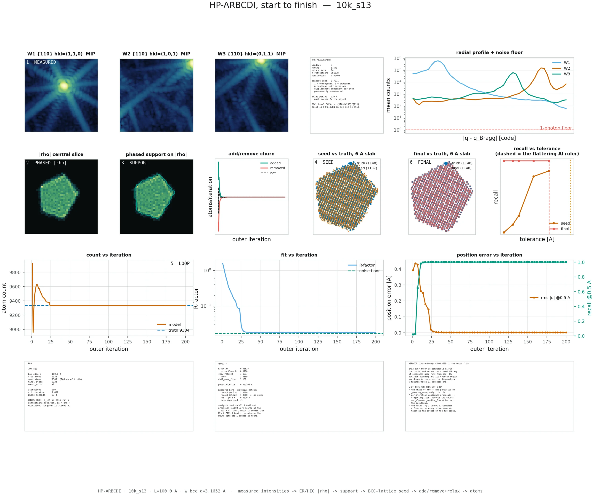

Each reconstruction in the gallery comes with a single sheet that shows the entire run from measurement to final atoms. It is dense on purpose — it is a working diagnostic, not a presentation slide — so this page walks through it panel by panel.
Look at fit vs iteration, in the middle of the third row. There is a solid blue curve (this run's R-factor) and a dashed green line (the noise floor). If the blue curve reaches the green line, the reconstruction worked. If it flattens out well above it, the run failed. Nothing else on the sheet overrules that panel, and it needs no knowledge of the right answer to read.
1.The sheet as a whole

10k_s13, a converged reconstruction of a 9,334-atom tungsten grain. Click
to enlarge — the text panels are legible at full size. Keep this open in another tab
while you read the sections below.
The sheet is laid out in pipeline order, and the numbered badges tell you where you are:
| Badge | Stage | What it is |
|---|---|---|
1 MEASURED | Input | The three Bragg intensity volumes. Everything downstream derives from these. |
2 PHASED |rho| | Phase retrieval | The low-resolution complex density recovered by error reduction. |
3 SUPPORT | Support | The region the grain occupies, extracted from that density. |
4 SEED | Seed | An ideal BCC lattice cut to the support — the starting model. |
5 LOOP | Refinement | The iterative fit, relax, add and remove cycle. |
6 FINAL | Result | The atoms the run ended with. |
2.Top row — the measurement
The three dark panels are the input data: the measured intensity around each of the three {110} Bragg peaks, labelled with their Miller indices — (1,1,0), (1,0,1), (0,1,1). Each is a 3D volume shown as a maximum-intensity projection, meaning you are looking through the volume and seeing the brightest value along each line of sight. Bright centre, faint speckle and streaks around it. The streaks are real signal, not artefacts; they carry the shape information.
These panels use a deliberately fixed dark-to-bright colour map that does not change with the page theme, so a Bragg peak always reads the way it would on a detector.
The text panel beside them records what the measurement was, and two entries there are worth knowing:
-
peakset |det|— how independent the three chosen peaks are. 1.0 is mutually orthogonal, 0.0 is coplanar. Three {110} peaks give 0.7071. A coplanar set would leave one component of every atomic displacement permanently unmeasured. Why → -
alias period— the real-space period implied by the detector sampling. It must exceed twice the object diameter, or the reconstruction wraps around on itself. The pipeline checks this before it starts.
The radial profile at the far right plots mean counts against distance from the Bragg peak centre, one curve per peak, with a dashed red line at one photon. It answers “how far out does this measurement still contain signal?” — and therefore what resolution is available at all. Where a curve sinks toward the one-photon line, there is nothing left to reconstruct from.
3.Second row — from density to atoms
|rho| central slice and
phased support on |rho| show what conventional phase retrieval
alone produced: a slice through the recovered density, and the same slice with the extracted
support boundary drawn over it in cyan. This is the poster's Fig. 3 — the
low-resolution reconstruction. It is where a conventional BCDI analysis would stop.
Compare the density and support panels of 10k_s13 against
10k_s14 in the gallery. One converged and one failed by a factor of a
thousand in fit quality, and you cannot tell which is which from these panels. Failure
does not happen during phase retrieval, and it does not show up in the low-resolution
image. That is precisely why the rest of the sheet exists.
add/remove churn plots how many atoms were added (green) and
removed (red) at each iteration, with the net change dashed in black. This is the single most
diagnostic panel after the fit curve:
- Activity, then a flat line at zero — the solver ran out of improvements to make. This is what finishing looks like.
- Activity that never stops — the run is churning: adding and removing atoms indefinitely without improving the fit. It will keep going until it hits the iteration cap.
seed vs truth and final vs truth
show a 6 Å-thick slab through the grain, with the true atoms as blue dots and the
model's atoms overlaid as crosses. The seed panel shows the starting lattice; the final panel
shows the answer. On a converged run the two clouds sit exactly on top of one another and the
counts in the legend match. Both panels are twin-resolved before drawing, so a correct but
inverted reconstruction is flipped rather than shown as two disjoint clouds.
What the twin is →
recall vs tolerance is the honesty panel. It sweeps the
matching tolerance and plots what fraction of true atoms count as recovered, for the seed
(orange) and the final model (red). A converged run is flat at 1.0 all the way down to a
tight tolerance. A failed run rises steeply somewhere in the middle — which tells you
its apparent recall depends entirely on how generous you were. The dashed vertical marker is
the loose default tolerance; see §6.
4.Third row — convergence
The three panels that decide whether the run worked. All three are reproduced at full size in
each run's process_07_convergence figure.
| Panel | Converged | Failed |
|---|---|---|
| count vs iteration orange = model, dashed blue = truth |
Overshoots, corrects, then locks onto the dashed line and stops moving. | Never reaches the line, or drifts past it and keeps drifting. |
| fit vs iteration blue = R-factor (log scale), dashed green = noise floor |
Descends and meets the dashed floor. | Descends briefly, then flattens far above the floor and stays flat. |
| position error vs iteration orange = RMS displacement (left axis), teal = recall at 0.5 Å (right axis) |
Orange collapses toward zero, teal jumps to 1.0 and holds. | Teal stays pinned at zero. The orange trace may cover a tiny range or stop early, because it is averaged over the atoms that matched — and there are none. |
Count and fit can be plotted from the measurement alone. The position-error panel needs the
true structure, so it exists here only because these are simulations. That asymmetry is the
whole reason χ²/floor is the headline metric rather than position
error: it is the one that survives the transition to a real beamline.
5.Bottom row — the three text panels
RUN records the configuration: box size, true atom count, how
many atoms the seed started with and what percentage of truth that was, final count, count
error, iterations, and seconds per iteration. It also carries a
UNITS TRAP warning — see §6.
QUALITY is the scorecard: R-factor against the noise floor,
reduced χ² against its floor, the ratio of the two, mean position error, and then
recall measured at two tolerances so you can see how much the loose one flatters the
result. The last line, twin sign used, tells you whether the reconstruction had
to be inverted before scoring.
VERDICT gives a one-line judgement —
CONVERGED to the noise floor or FAILED (chi2 far above the floor)
— and is explicitly labelled truth-free, because it is derived only from
χ²/floor. It then lists what the sheet does not show, which is unusual for a
figure and deliberate: the phase of the density is not persisted, per-iteration candidate
proposals are not recorded, and intensity cannot distinguish an object from its inverse.
6.The units trap, spelled out
The default matching tolerance in the analysis code is half a lattice parameter, read from the run's own metadata. In this campaign that metadata field carried aluminium's lattice parameter, 4.046 Å, giving a default tolerance of 2.023 Å.
Tungsten's first-neighbour bond is 2.7411 Å. So the default tolerance is only 74 % of a bond — wide enough that an atom sitting on a neighbouring lattice site is still scored as correctly found.
Rather than silently switch tolerance and quietly restate the numbers, the figures print
both: the loose 2.023 Å value that the archived analysis.toml files
contain, and the honest 0.5 Å value re-measured for the figure. Where those two
disagree, the tight one is the real answer.
How far apart they get →
7.The other figures
Residual field
A spatial map of how much position error is left, and where. This distinguishes two very different situations that produce the same average error: a localised mistake (the solver got one defect wrong and everything else right) and a global one (every atom is slightly off). A converged run is uniform and near zero. A failed run is usually uniform and large, which is itself the clue — it points to a whole-lattice offset rather than a local error.

10k_s13 — nothing left anywhere.
10k_s14 — error spread evenly over the whole grain.Atom slabs
This is the poster's Fig. 5–6 layout: thin slabs cut through the truth and the reconstruction side by side, plus a per-atom position-error map. Atoms are coloured by their local structure, computed with adaptive common-neighbour analysis:
- Light blue — interior atoms whose local coordination is BCC, i.e. ordinary bulk lattice.
- Red — interior atoms whose coordination is something else: a defect core, a void wall, a fault.
- Grey — the surface shell, within 3.5 Å of the grain boundary. Surface atoms have unusual coordination for trivial reasons, so they are faded out rather than counted as damage.
The classifier used here was validated against OVITO's common-neighbour analysis, with zero disagreements over 88,833 atoms.

The animations
The videos show the model redrawn at every saved iteration, with a rotating camera and a live readout of atom count, error against truth, R-factor and reduced χ². Blue is the lattice, amber marks interior atoms whose coordination is not BCC, and open rings are true sites. Surface atoms are drawn in the lattice colour rather than greyed out, so the whole grain stays visible.
Watch the readout rather than the cloud. The visual difference between a converged and a failed run is far smaller than the difference in the numbers — which is the most important intuition on this whole site.
Where to go next
The two distinct failure modes, why a stuck run cannot stop itself, and how to pick the good reconstruction without knowing the answer.
Back to the gallery →Now that the panels make sense, the eight case studies are much faster to read.
How BCDI works →The phase problem, why three Bragg peaks, and what molecular dynamics adds to the loop.